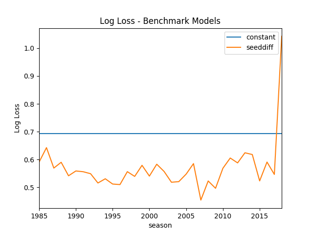

No fancy machine learning models, here. Just a collection of simple and intuitive hacks. Later we'll need these benchmarks to understand if our fancy models are actually any good.
Quick Summary:
import pandas as pd import numpy as np from matplotlib import pyplot as plt import seaborn as sns from tabulate import tabulate from sklearn.metrics import log_loss from sklearn.metrics import roc_curve, auc from src import utils # see src/ folder in project repo from src.data import make_dataset
print_df = utils.create_print_df_fcn(tablefmt='orgtbl'); show_fig = utils.create_show_fig_fcn(img_dir='models/benchmark/');
data = make_dataset.get_train_data_v1()
print_df(data.head())
| | season | daynum | numot | tourney | team1 | team2 | score1 | score2 | loc | team1win | seed1 | seednum1 | seed2 | seednum2 | seeddiff | ID | |----+----------+----------+---------+-----------+---------+---------+----------+----------+-------+------------+---------+------------+---------+------------+------------+----------------| | 0 | 1985 | 20 | 0 | 0 | 1228 | 1328 | 81 | 64 | 0 | 1 | W03 | 3 | Y01 | 1 | -2 | 1985_1228_1328 | | 1 | 1985 | 25 | 0 | 0 | 1106 | 1354 | 77 | 70 | 1106 | 1 | nan | nan | nan | nan | nan | 1985_1106_1354 | | 2 | 1985 | 25 | 0 | 0 | 1112 | 1223 | 63 | 56 | 1112 | 1 | X10 | 10 | nan | nan | nan | 1985_1112_1223 | | 3 | 1985 | 25 | 0 | 0 | 1165 | 1432 | 70 | 54 | 1165 | 1 | nan | nan | nan | nan | nan | 1985_1165_1432 | | 4 | 1985 | 25 | 0 | 0 | 1192 | 1447 | 86 | 74 | 1192 | 1 | Z16 | 16 | nan | nan | nan | 1985_1192_1447 |
\[\text{All teams are created equal}\]
models = {} models['constant'] = pd.DataFrame({'ID':data['ID'], 'Pred':0.5})
\[\text{Higher seeded team is more likely to win}\]
In this model, we use the relative difference in seed to predict the winning team. For example,
In math, this is \[d_i = \text{difference in seeds for game } i\] \[p(win_i) = \frac{d_i - d_{min}}{d_{max} - d_{min}}\]
models['seeddiff'] = (data.set_index('ID') .pipe(lambda x: ((x['seeddiff'] - x['seeddiff'].min()) / (x['seeddiff'].max() - x['seeddiff'].min()))) .reset_index() .rename({'seeddiff':'Pred'}, axis=1) .dropna() )
models_loss = {} for m_name, m in models.items(): m_loss = (m.pipe(pd.merge, data.loc[data.tourney == 1, ['ID', 'team1win', 'season']], on='ID', how='inner') .groupby('season') .apply(lambda x: log_loss(x['team1win'], x['Pred']))) models_loss[m_name] = m_loss fig, ax = plt.subplots() pd.DataFrame(models_loss).plot(ax=ax) ax.set_title('Log Loss - Benchmark Models') ax.set_ylabel('Log Loss') show_fig('log_loss.png') show_fig

There is a huge spike in 2018 season because a 16th seeded team beat
the top seeded team. In this case, the SeedDiff Model predicts a
winning probability of exactly 0, which would result in an infinite
log-loss. Fortunately, sklearn.metrics.log_loss clips the predicted
probabilities away from 0 and 1 by a small amount to prevent infinite
loss. It'd be a good idea to prevent our models from predicting 0 or 1
probabilities (i.e. pretending to know the outcome with
certainty).
Here is a query for the game that caused an infinite loss in SeedDiff Model.
tmp = data[(data.season == 2018) & (data.tourney == 1)] print_df(tmp.loc[tmp.seeddiff.abs().sort_values(ascending=False).index].head())
| | season | daynum | numot | tourney | team1 | team2 | score1 | score2 | loc | team1win | seed1 | seednum1 | seed2 | seednum2 | seeddiff | ID | |--------+----------+----------+---------+-----------+---------+---------+----------+----------+-------+------------+---------+------------+---------+------------+------------+----------------| | 158239 | 2018 | 137 | 0 | 1 | 1420 | 1438 | 74 | 54 | 0 | 1 | Y16 | 16 | Y01 | 1 | -15 | 2018_1420_1438 | | 158241 | 2018 | 137 | 0 | 1 | 1411 | 1462 | 83 | 102 | 0 | 0 | Z16b | 16 | Z01 | 1 | -15 | 2018_1411_1462 | | 158225 | 2018 | 136 | 0 | 1 | 1347 | 1437 | 61 | 87 | 0 | 0 | W16b | 16 | W01 | 1 | -15 | 2018_1347_1437 | | 158216 | 2018 | 136 | 0 | 1 | 1242 | 1335 | 76 | 60 | 0 | 1 | X01 | 1 | X16 | 16 | 15 | 2018_1242_1335 | | 158236 | 2018 | 137 | 0 | 1 | 1168 | 1345 | 48 | 74 | 0 | 0 | W15 | 15 | W02 | 2 | -13 | 2018_1168_1345 |